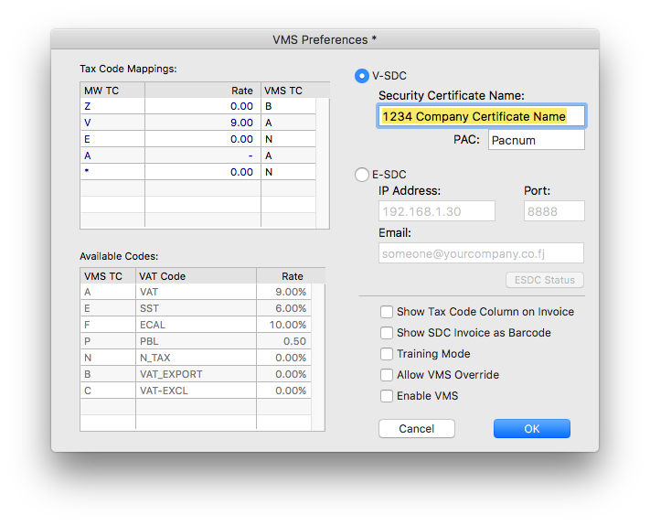

MoneyWorks Manual
VMS settings
To configure VMS in MoneyWorks:
- Choose Command>Fiji VMS settings
The VMS Settings window will open:

- Map your internal MoneyWorks Tax Codes to the VMS standard codes
The Tax Code Mappings list displays the VAT codes used in your MoneyWorks file. VMS requires standardised codes, which are displayed in the list underneath. You need to enter the corresponding VMS code for each of your codes (this is done in the right hand column). For example the tax code "Z" is used in MoneyWorks for zero rated exports, and the corresponding VMS code is "B". You can enter more than one VMS code per MoneyWorks tax code, provided they are separated by commas and there are no spaces.
- If you are using V-SDC, click on the V-SDC option and enter:
Security Certificate Name: The certificate (along with instructions on how to install it) is supplied by FRCS.
PAC: A code supplied by FRCS.
- If you are using E-SDC, click the E-SDC option and enter:
IP Address of E-SDC device on your local network (e.g. 192.168.1.30);
Port Number of E-SDC device (default is 8888)
Email address of administrator (optional). Whenever MoneyWorks detects that an E-SDC audit is required an email will be prepared to this address. Depending on your email settings in MoneyWorks Preferences, this will either open in your email client, or (if using SMTP) be sent silently.
- Click the E-SDC Status button to display a summary of the current status of the E-SDC device. This will also trigger an email if the email address is present and an audit is required (card more than 75% full)
- If you are using both V-SDC and E-SDC, leave the radio button set to your preferred default
If you need to change methods later, just change the radio button setting.
Other options:
Show Tax Code Column on Invoice: This will display the VMS tax code (A, B etc) in a separate column on the supplied VMS compliant tax invoice form.
Show SDC Invoice as Barcode: The SDC Invoice number is a special code returned by VMS which is required to printed on each invoice. If this option is set, it will also also print as a barcode so can be easily scanned in (if issuing a refund, you need to reference this number).
Training Mode: Puts the MoneyWorks VMS system into a special training mode. Invoices submitted to VMS will be marked as "Training" (i.e. not real). As these are real posted transactions in MoneyWorks, it is important that you reverse these out before the training session is complete (you don't want to do it after, as VMS will treat the reversals as real transactions).
Allow VMS Override: Allows users to bypass VMS processing on selected transactions. You would only enable this if you are entering transactions from another system, such as a stand alone POS, which has already fiscalised the transaction. Transactions that are bypassed will be marked as such (with the user initials) for audit purposes. Note that the setting and resetting of this option will be recorded immutably in MoneyWorks for audit purposes.
Enable VMS: This turns the VMS system on permanently (it cannot be turned off again, but you will get a couple of warnings about this). Do not turn this on until you are ready with VMS.